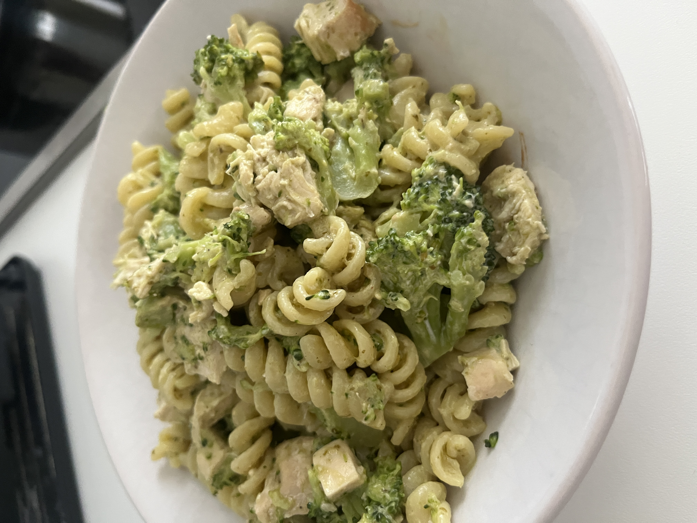

Pasta Pesto Chicken

Description:
A simple protein rich and high carb dish, perfect as a post-workout meal.
No diary, made with pesto from basil and cashews and topped with soya cooking cream.
Ingredients:
- 100g fusili pasta
- 100g chicken breast
- 100g broccoli
- 1-2 tbsp. vegan green pesto
- 30ml soy cooking cream
- pinch black pepper
- pinch salt (optional - pesto is salty)
Steps:
- Salt the chicken breast and cook it for 10-15min.
- Cook the broccoli for 10min.
- Boil the pasta for 10-12min. and do not throw all the water away when ready
- Slice the chicken and broccoli into pieces
- Put all together in a pan with 1 tbsp. pasta water (low fire)
- Add pepper & salt
- Put the pesto and stir for 1-2min.
- Set away from the fire and top it up with soy cream
Home